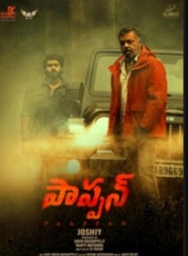

kushi
Kushi (transl. Happiness) is a 2023 Indian Telugu-language romantic comedy film written and directed by Shiva Nirvana. Produced by Naveen Yerneni and Y. Ravi Shankar under the production banner Mythri Movie Makers, the film features Vijay Deverakonda and Samantha with Sachin Khedekar, Saranya Ponvannan, and Murali Sharma in supporting roles
pappan

Kushi (transl. Happiness) is a 2023 Indian Telugu-language romantic comedy film written and directed by Shiva Nirvana. Produced by Naveen Yerneni and Y. Ravi Shankar under the production banner Mythri Movie Makers, the film features Vijay Deverakonda and Samantha with Sachin Khedekar, Saranya Ponvannan, and Murali Sharma in supporting roles
dochevaruevaru
Kushi (transl. Happiness) is a 2023 Indian Telugu-language romantic comedy film written and directed by Shiva Nirvana. Produced by Naveen Yerneni and Y. Ravi Shankar under the production banner Mythri Movie Makers, the film features Vijay Deverakonda and Samantha with Sachin Khedekar, Saranya Ponvannan, and Murali Sharma in supporting roles